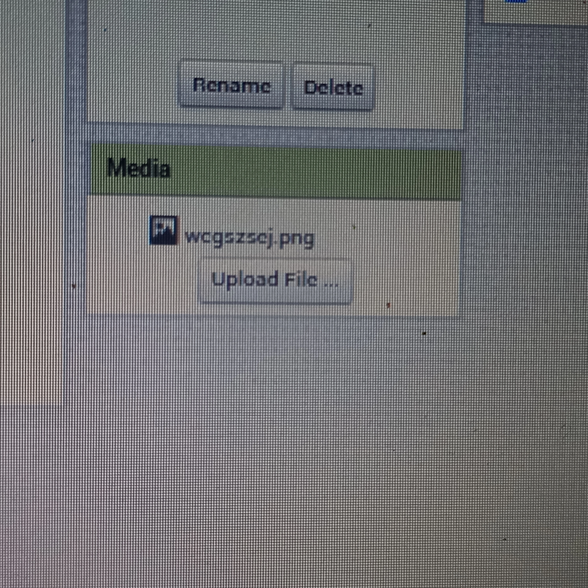
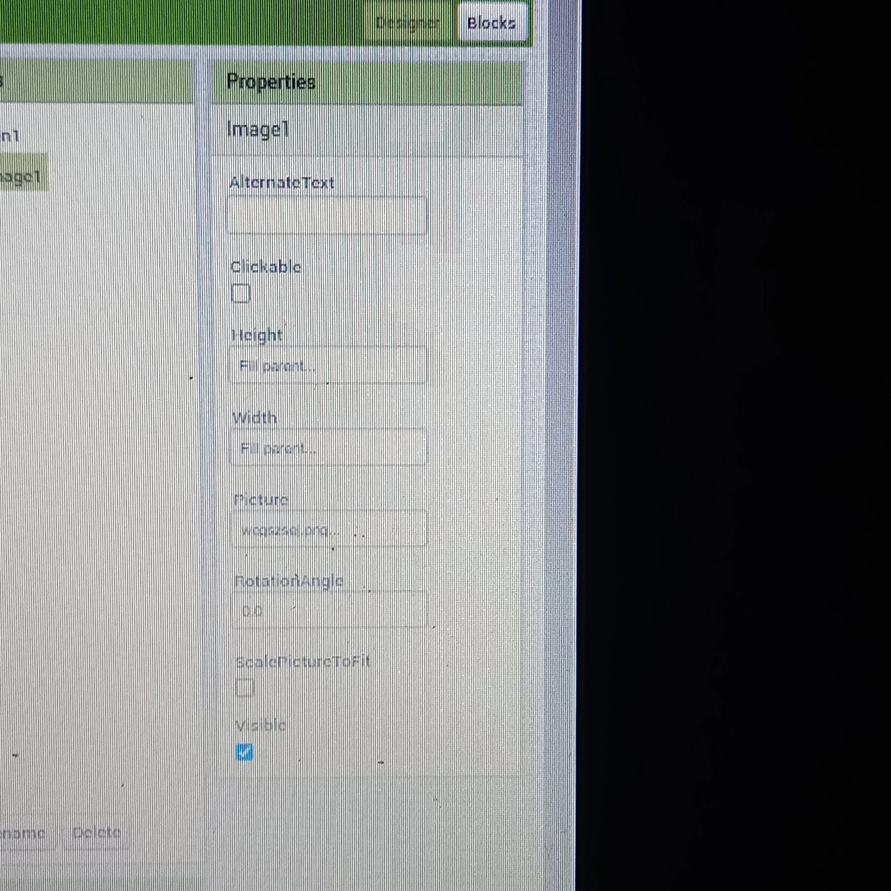

How to add an image to your screen on mit app inventor
Adding an Image to Your Screen on MIT App Inventor
To add an image to your screen on MIT App Inventor, follow these steps:
• Log in to yourMIT App Inventor account.
• Open your project. A screen is already added by default, which is called Screen1.
• On the left-hand side of the screen, under the User Interface section, you will find an icon labeled "Image." Click and hold the image icon and drag it into the screen. The image will be named Image1. 
• Assuming you have already downloaded and named your file, go to the bottom right-hand side of your page. You will see a section named "Media." Under Media, there is an "Upload File" button. Click the button and choose the file you want to upload. Then click "OK."

• Under the Media section, you will see the name of your image. On the bottom right side of the screen, you will find a "Properties" section. Tick the "Clickable" button and adjust the width and height by clicking the "Fill Parent" button.

• Under the "Picture" section, click on the "None" text, and the name of your image will appear. Click on the name of your image, then press "OK." make sure visible button is ticked
• Your image should now appear on the screen.

In summary, adding an image to your screen on MIT App Inventor is a simple process that involves dragging and dropping the image icon into your screen, uploading the image file, and adjusting the properties of the image to ensure it is displayed correctly.